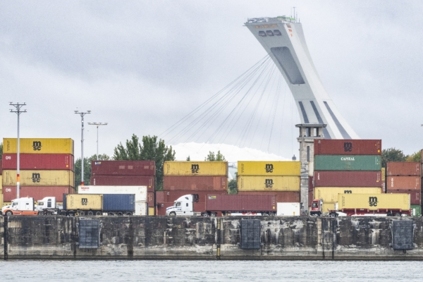

2023年9月19日，卡车拉着集装箱离开蒙特利尔港。当年有超过170万个集装箱在该港口进出，也给执法查找被盗车辆带来了困难。（Christinne Muschi/加通社） 【2024年08月06日讯】（记者楚方明多伦多报导）加拿大盗车问题堪忧，越来越多司机安装如苹果公司AirTag之类的简易跟踪设备，以监控他们的车辆。但这些设备准确度不太高，而更加专业的车辆防盗追踪系统作用更大，它们填补了查找被盗车辆准确位置的空白。加拿大绝大多数的被盗车经蒙特利尔港运出加拿大，销往外国，而要在成千上万个集装箱中，靠AirTag找到被盗车辆的准确位置非常困难。去年有超过170万个集装箱在该港口进出。
蒙特利尔港与追综公司合作
目前，蒙特利尔港正与总部位于蒙特利尔的企业Tag Tracking合作，试图缩小搜索被盗车辆范围，阻止这些汽车运往海外。
据Global News报导，Tag Tracking公司在车辆的隐蔽位置安装5至7个小设备，以防被盗车贼拆除，该公司还在蒙特利尔港各处安装接收器，以便“更准确、更迅速地定位可疑集装箱”。
该公司经营了近15年，已经追回了价值超过1.5亿元的被盗汽车。
魁北克省的一些保险公司为减少车辆盗窃索赔，他们的一些策略是，要求或鼓励车主使用Tag Tracking公司的车辆跟综服务。
Équité协会表示，像Tag Tracking这样的追踪公司在防盗方面而发挥了作用。根据该协会的说法，找车工作非常有效，犯罪分子将注意力转向了安省等地，因为这些地方安装追踪系统的车辆还不太普遍。
从去年12月中旬到今年3月底，警方在蒙特利尔港检查了大约400个集装箱，发现了近600辆被盗车辆，其中大多数来自多伦多地区。
安省或效仿魁省
据多伦多警察总长称，去年，在多伦多，每40分钟就有一辆汽车被盗，这代表了1.2万辆汽车被盗，总价值近8亿元。
Tag Tracking公司表示，为避免保费上涨，安省的一些保险公司正效仿魁省的做法，要求或鼓励车主安装车辆追踪系统。
到了蒙特利尔港，再依靠追综系统找到被盗车辆，似乎还是晚了一步。加拿大边境局希望，车辆被盗后，能在多伦多或其它城市当地的货运仓库或车站就能找到，而不是等到它们被运到蒙特利尔港再查找。
因此，边境局制定了一项名为“定位请求协议”的新计划，该计划已于6月正式推出。
执法部门越在就近的地方采取行动，就越能尽早地追回被盗车。不过，Équité协会表示，汽车制造商也应该想办法保护车主，毕竟车越难被盗，越不容易被偷走。◇
责任编辑：文芳